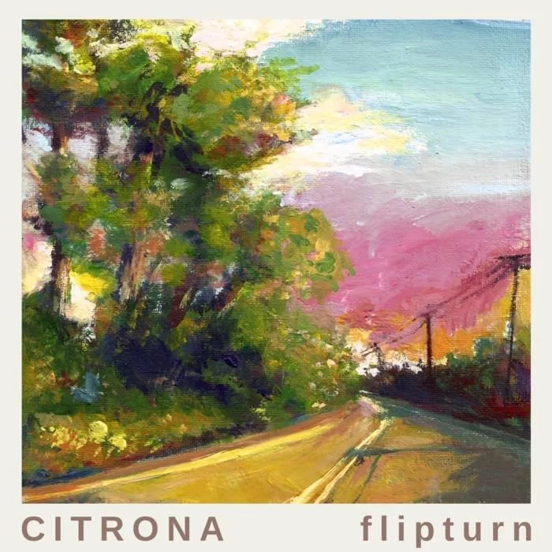
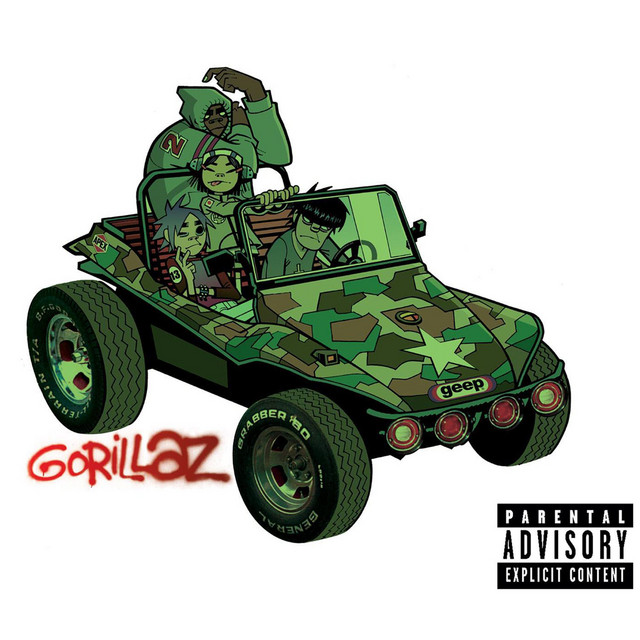
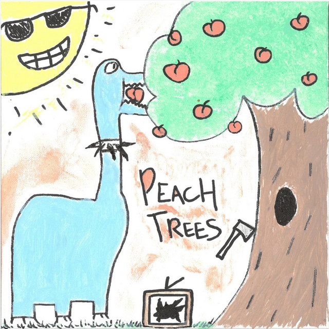
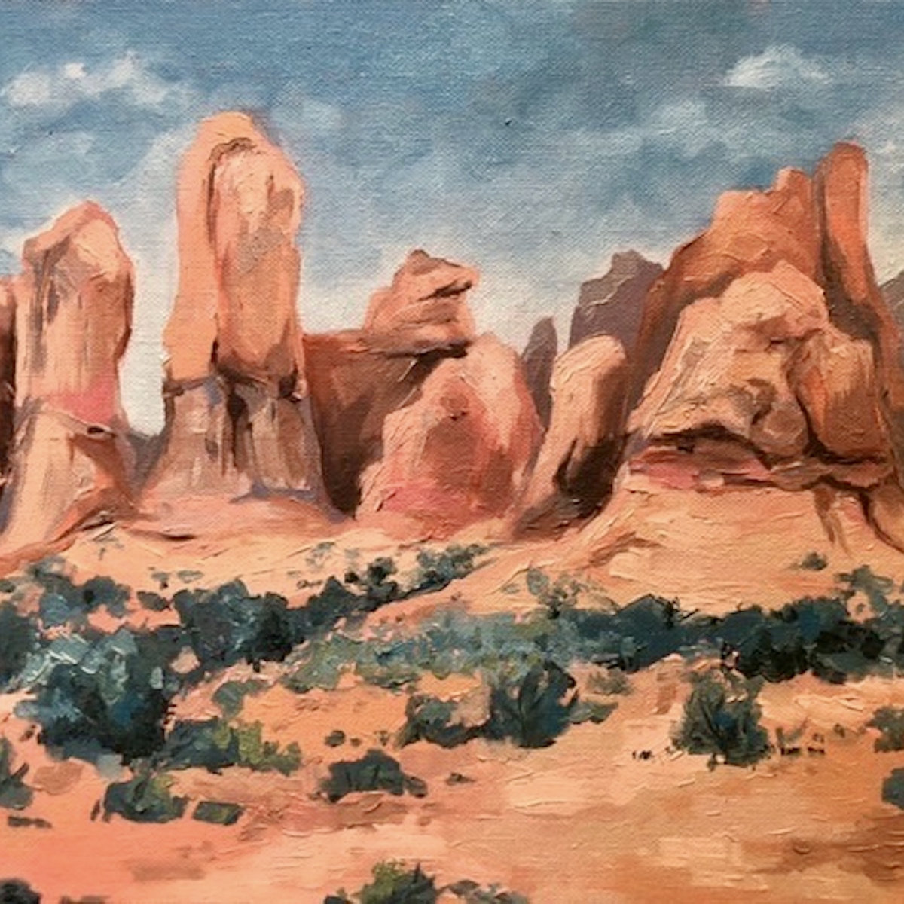

|  | August - flipturnThis song is so fantastic! I especially love the guitar in this and the way the song weaves between these softer moments and more intense, louder bursts. Its a song I could easily listen to on loop for a few hours and not get tired of. The acoustic version is another rendition I would highly recommend. |
| Rating: ★ ★ ★ ★ ★ |
|  | 19-2000 - GorillazGorillaz is one of my favorite artists - if not my #1 - and all of their music is incredibly special to me. 19-2000 is such a funky, weird song that encapsulates the experimental nature of the group. The song itself is relatively simple with a repetitive melody, but I love the way it integrates all of these funky sound effects and dialogue snippets into it. |
| Rating: ★ ★ ★ ★ ★ |
|  | Peach Trees - Ax and the HatchetmenAx and the Hatchetmen is an artist I just found this year and this was the song that got me into them! I love how the singers voice, drums, and guitarline all play together in this song to create a fun, groovy sound. Its a song you listen to and cant help but dance a little to. |
| Rating: ★ ★ ★ ★ ☆ |
|  | Grand Hoodoo - The MossThis is another song that I discovered last semester and I love it so dearly. I love how expressive the singers voice is in the song and how he plays with these different inflections. Something about his voice just scratches an itch in my brain! |
| Rating: ★ ★ ★ ★ ☆ |